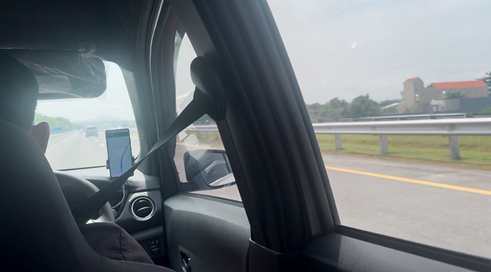

帕米尔高原的风、精灵坠崖边印度洋的浪、泗水闷热街头的车流、以及布罗莫火山夹杂着硫磺味的暴雨……这几年，我把自己的坐标锚定在世界各地的边缘。
别人都说我很勇敢，但今天，我想撕开这层勇敢的滤镜，讲讲这背后的3个故事。
2024年7月22日，我第一次离开浙江独自旅行，去了中国最西边的喀什。第一次坐飞机，什么都不懂，满脑子只有“看雪山”的幼稚冲动。刚拿驾照的我甚至想自驾上帕米尔，幸好最后包了车，躲过了在冰冷高原睡车里的危机。
真正的惩罚在午夜。凌晨一点，严重的急性肠胃炎将我痛醒。浑身脱力，我骑着共享电瓶车，在冷风里强撑着去急诊。
挂上盐水时，我满脑子都在崩溃呐喊“立马回家”。但我绝望地意识到：我不可能瞬移，就算现在能瞬间躺在家里的床上，痛苦也不会减少半分。于是我放弃了精神挣扎，坐在惨白的灯光下，默默承受这份痛苦，直到早上七点。

2024年10月1日，那是我第一次去看海。
在去往海边的路上，我满怀期待，想象着它和电影里有什么不同。穿过环岛马路，绕过斑马线，当我终于踏上草坪，看到一望无际的大海时，我看到的也是沙滩上熙熙攘攘的人群——笑着的情侣、朋友和家庭。
看着他们脸上洋溢的笑容，那一瞬间，我感觉自己像个格格不入的“怪胎”。我的身体不受控制地退回到草坪上坐下，看着远处的喧闹。
那 15 分钟，是我人生中感到最孤独的一段时间。
2026年2月底，我第一次独自出国。这是一场极其“梦幻”且狼狈的旅程。
听说新加坡樟宜机场“最好睡”，我真信了。结果只找到两张连排椅，我把上半身躺在椅子上，膝盖和小腿架在行李箱上蜷缩着。起初我觉得有失体面，但困意袭来还是妥协了，半睡半醒地熬到了早上六点。
后来，在印尼泗水下了飞机，打车前往布罗莫火山。在车里看着窗外完全陌生的赤道景色时，一种巨大的恐惧突然击中了我。我真切地意识到：我一个人，来到了一个环境、文化、语言完全不同的异国他乡。在出发前两周的计划里，我被“看火山”的兴奋冲昏了头脑，竟然完全没有预料到这种深不见底的未知恐惧。

其实，我并不是什么旅行达人，每次出去依然会像个小孩一样，反复确认上飞机的流程和注意事项。
我们太习惯于用精美的风光去掩饰内心的荒芜，却不敢承认，那些狼狈不堪的时刻，才是真正重塑我们骨肉的铁锤。
在这几年里我搞砸过，恐惧过，但我没有因为这些停下。恐惧不应该成为我们停止追逐自己想要的东西的理由，不是吗？
我有一个梦想：未来当一个环球世界生活的数字游民。
这很难。但我正在为此狂热地奋斗。我在自学编程，把脑海中那些看似荒谬的构想，一行行敲成真正的数字产品。我在推演如何用技术为自己加持杠杆，去换取在这个世界上自由行走的底气。
我不想让你们觉得，这些都是我一个人的故事。其实，我觉得每个人的内心都住着一个“旅行者”，渴望去追逐那些看似遥不可及的梦想，去经历那些看似无法承受的挑战。只是我们太习惯于用“现实”这个词去压抑它了。
我想说：不要害怕去追逐那些看似不切实际的梦想，不要害怕去经历那些看似无法承受的挑战。因为在这个过程中，你会发现，真正的勇敢不是没有恐惧，而是带着恐惧去前行。
如果你也看过《海贼王》，那你一定听过这句：ONE PIECE是真实存在的！
那么，屏幕前的你呢？
你的梦想，是什么？
以下分享三句话：
"It's not who I am underneath, but what I do that defines me."
你本质是谁并不重要，你所作的事定义了你。
— 蝙蝠侠：侠影之谜 (2005)
"Why do we fall, sir? So that we can learn to pick ourselves up."
我们为什么会跌倒？是为了让自己更好地站起来。
— 蝙蝠侠：侠影之谜 (2005)
"A hero can be anyone."
— 蝙蝠侠：黑暗骑士崛起 (2012)